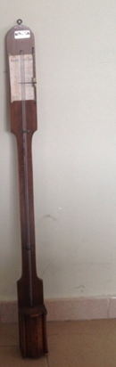

Barometro
Scuola di provenienza: Liceo Statale "P.E. Imbriani", Avellino
Settore: Meteorologia
Costruttori: Paravia, Torino
Materiali: Legno di noce, mercurio, vetro e ferro
Accessori: Nessuno
Stato di conservazione: Da ripulire
Descrizione: Comune barometro a sifone con mercurio e canna di vetro su tavoletta di legno già in uso nella metà del XVII secolo. È fornito di un quadrante a corsoio mobile per l´indicazione del livello di mercurio. È un tipo di barometro più perfezionato della canna torricelliana; la pressione della camera barometrica è uguale a quella atmosferica. Verrà sostituita nel laboratorio di fisica, agli inizi dell´ottocento col barometro di Fortin.